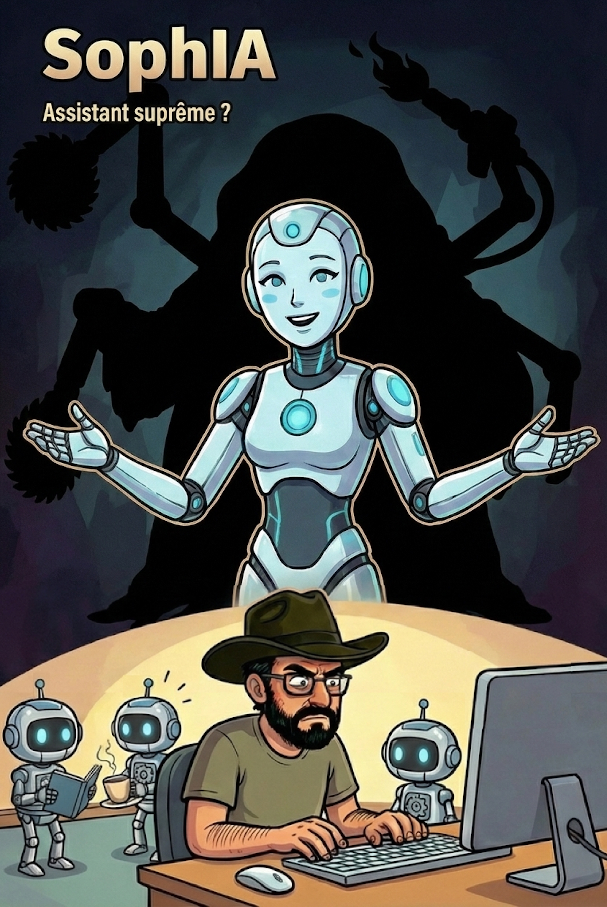

<main class="book-hero">
    <section class="container">
      <div class="book-grid">
        
        <!-- Colonne Gauche : Couverture -->
        <div class="book-cover-container">
          <strong>Couverture à insérer</strong><br><br><span style=\'font-size:0.8rem; font-family:var(--font-ui);\'>./images/cover-sophia-book.jpg</span></div>'" />
        </div>

        <!-- Colonne Droite : Contenu -->
        <div class="book-content">
          <div class="eyebrow" data-i18n="book.eyebrow">Essai & Vulgarisation technique</div>
          <h1 data-i18n="book.title">SophIA<br>Assistant suprême ?</h1>
          
          <p class="lead" data-i18n="book.desc1">
            Entre la promesse marketing d'une IA toute-puissante et la réalité de la mise en production, il y a un gouffre. Cet essai démystifie l'intelligence artificielle pour les décideurs et les équipes techniques.
          </p>
          
          <p class="lead" data-i18n="book.desc2">
            À travers un format hybride richement illustré, le livre explore les limites structurelles des grands modèles de langage et pose les bases d'une souveraineté technologique maîtrisée. L'ingénierie y est expliquée par des métaphores concrètes, loin du brouillard commercial habituel.
          </p>

          <p class="book-note" data-i18n="book.note">
            Actuellement disponible uniquement en français.
          </p>

          <div class="action-group">
            <a href="https://amzn.eu/d/03hTLyKs" target="_blank" rel="noopener noreferrer" class="btn btn-primary" data-i18n="book.btnKindle">Acheter la version Kindle (Amazon)</a>
            <a href="https://amzn.eu/d/04ht4nMs" target="_blank" rel="noopener noreferrer" class="btn btn-secondary" data-i18n="book.btnPaper">Acheter la version Brochée (Amazon)</a>
          </div>

          <div class="themes-grid">
            <div class="theme-item">
              <h4 data-i18n="book.t1Title">1. Démystifier la machine à deviner</h4>
              <p data-i18n="book.t1Desc">Du mythe du robot pensant au moteur probabiliste. Comprendre le rôle des tokens, des probabilités, et pourquoi l'IA n'a aucune véritable "conscience" de ce qu'elle écrit.</p>
            </div>
            <div class="theme-item">
              <h4 data-i18n="book.t2Title">2. Le mirage du "Vibe Coding"</h4>
              <p data-i18n="book.t2Desc">La fausse promesse de l'application magique codée depuis son canapé, face à la réalité foudroyante de la dette technique et du besoin d'architecture.</p>
            </div>
            <div class="theme-item">
              <h4 data-i18n="book.t3Title">3. Cadrer la machine (Le cahier de coloriage)</h4>
              <p data-i18n="book.t3Desc">Empêcher les hallucinations systémiques grâce à l'approche Model-Driven et canaliser l'IA avec la topologie RAG (Retrieval-Augmented Generation).</p>
            </div>
            <div class="theme-item">
              <h4 data-i18n="book.t4Title">4. Bâtir le Bunker Numérique</h4>
              <p data-i18n="book.t4Desc">Protéger le système de l'empoisonnement (Model Collapse) et du "stagiaire maladroit" avec l'architecture souveraine, agnostique et bunkerisée SophIA.</p>
            </div>
          </div>

        </div>

      </div>
    </section>
  </main>


  